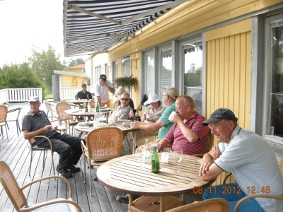
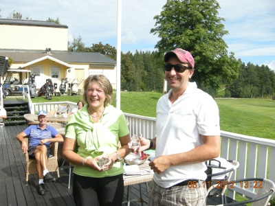
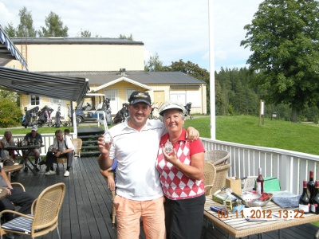
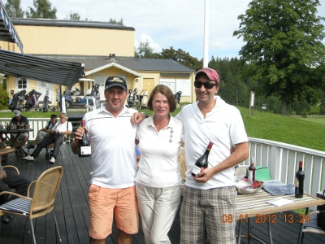
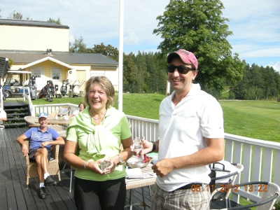
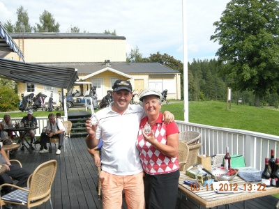
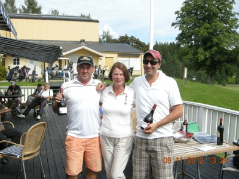

Strömshammarsmästerskapet 2012
Lördagen de 11 augusti spelades vår årliga golftävling för sextonde året i rad i ett strålande sommarväder på Solbacka GK. 24 spelare deltog i tävlingen damer och herrar.
Resultatlista:
| Damer | S-HCP | Resultat |
| Kerstin Wakander | 28 | 73 |
| Inger Danielsson | 32 | 76 |
| Eva Uppströmer | 33 | 77 |
| Herrar | S-HCP | Resultat |
| Anders Börjebo | 16 | 67 |
| Kurt Danielsson | 18 | 74 |
| Lars Sparreljung | 26 | 74 |
| Longdrive: | ||
| Damer | Margreth Björklund | |
| Herrar | Joakim Björklund | |
| Närmast hål: | ||
| Damer | Kerstin Wakander | |
| Herrar | Johan Börjebo |
Bästa lag: Inger Danielsson, Johan Börjebo, Joakim Björklund 233 slag.
 




